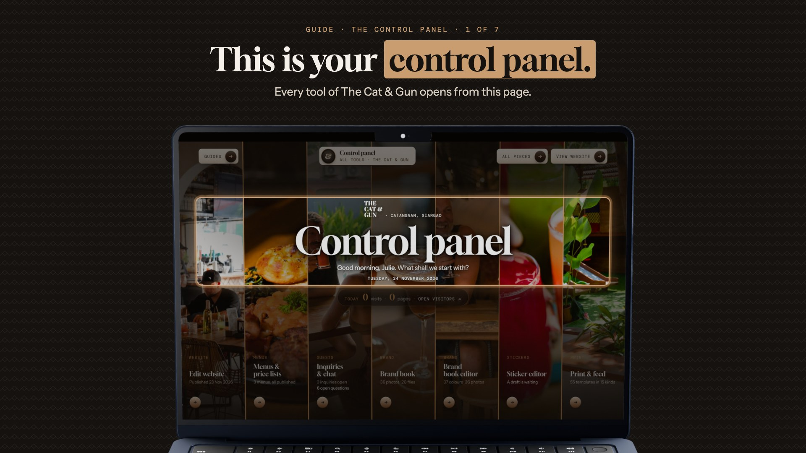
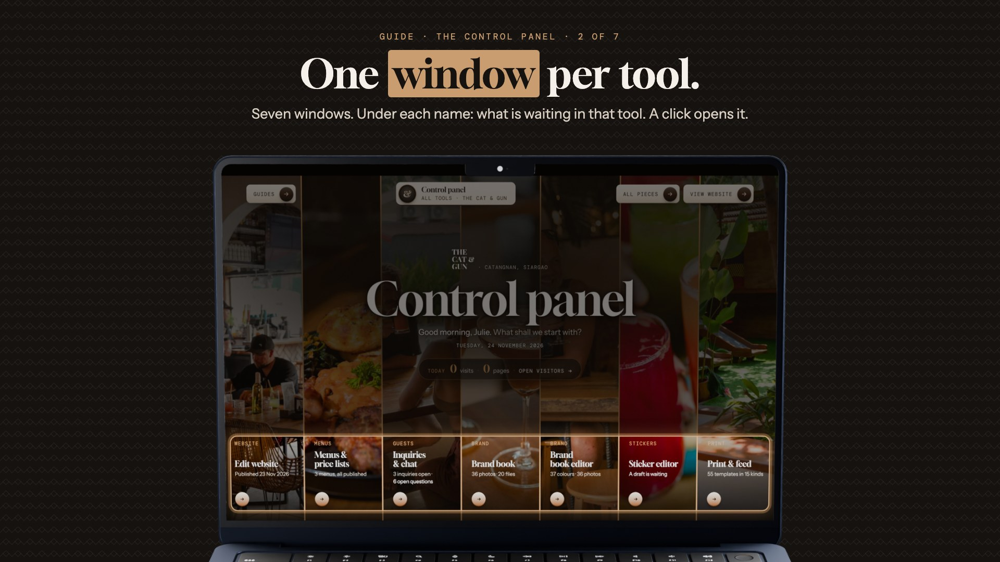
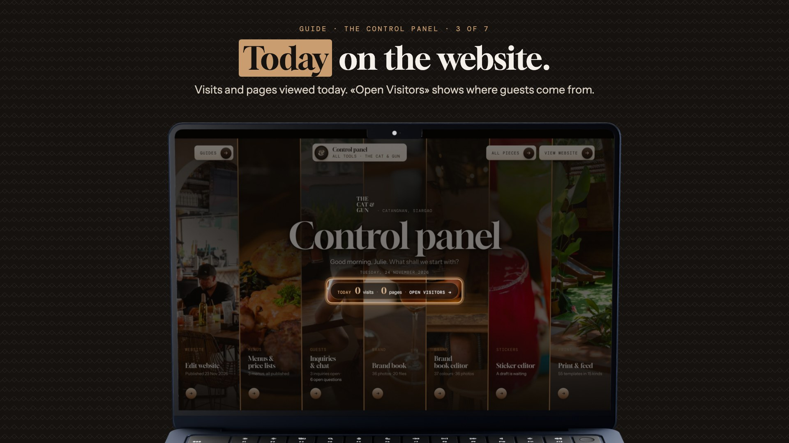
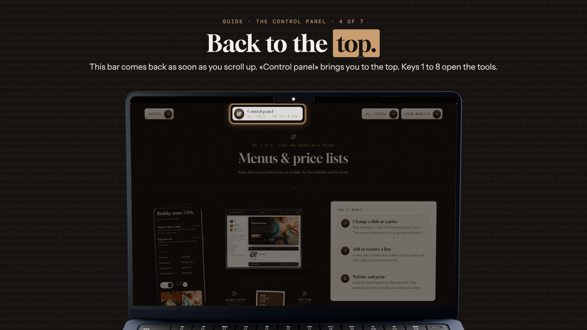
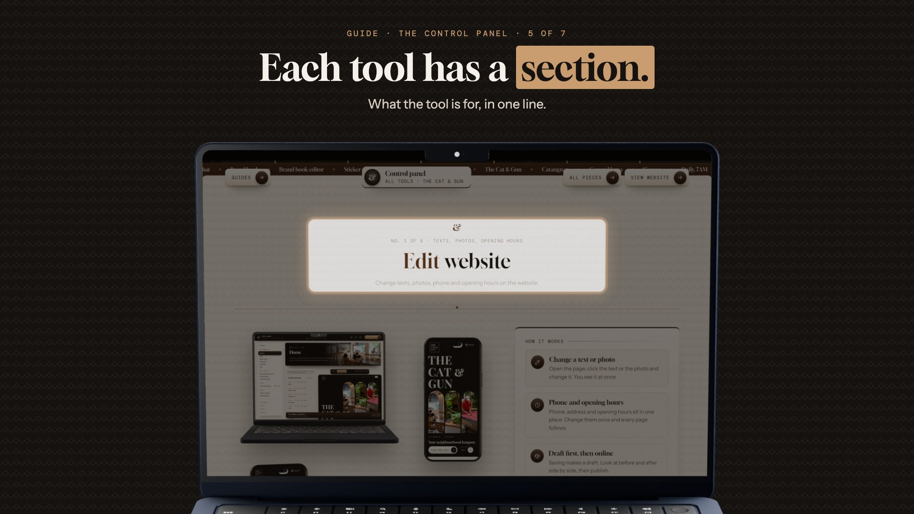
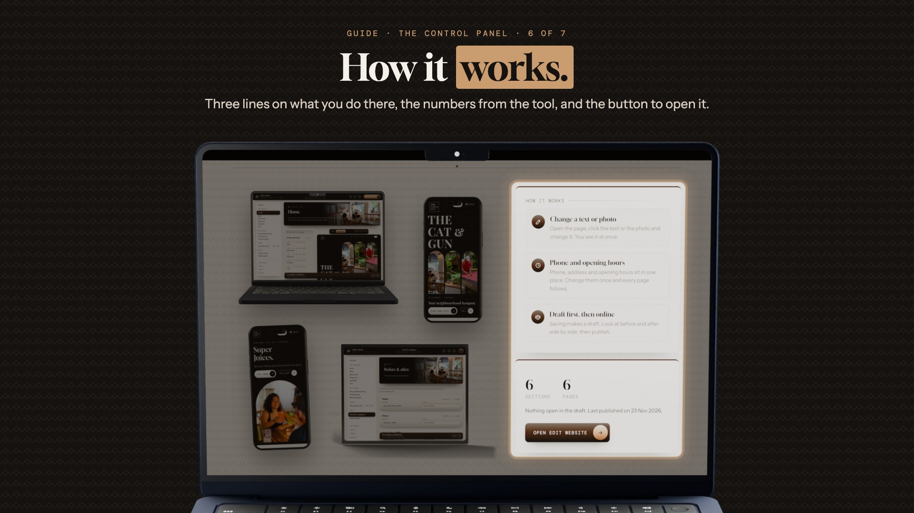
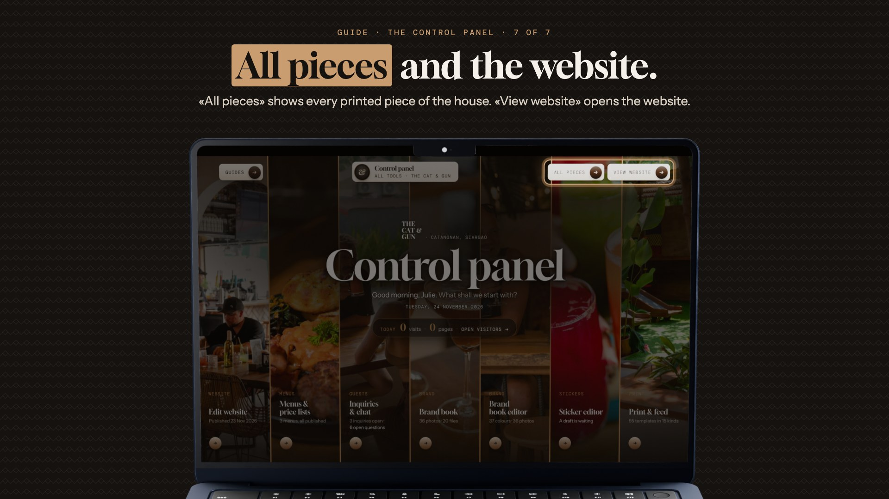

Das Video
Mit Untertiteln (24.11.2026): Der erklärende Satz läuft im Bildschirm direkt am gerahmten Stück; die Wörter steigen einzeln und im Fluss hoch. Oben steht nur noch die Überschrift. Weiter geht es, sobald der Satz steht. Kein Untertitel liegt über einem Rahmen, das prüft die Aufnahme in jedem Schritt.
Jeder Lichtrahmen wurde auch in der laufenden Aufnahme in der Mitte seiner Lesezeit noch einmal am Element gemessen: Abweichung 0 px in allen sieben Schritten. Musik leise (derselbe Titel wie im Tasty-Reel), keine Stimme.
Ablauf
Die Überschrift kommt Wort für Wort, das letzte Wort bleibt grau, bis der Satz steht; der Laptop steigt ein Stück auf und blendet ein. Zwischen den Schritten blendet der Rahmen aus, die Seite scrollt ruhig, der Zeiger gleitet langsam zum nächsten Stück, dann blendet der Rahmen dort ein. Am Ende «Next guide: Save, check, publish, go back.»
Die Standbilder

.m-f5__ort, .m-f5__titel, .m-f5__gruss, .m-f5__datumRahmen 56, 173 bis 1384, 444 px✓ geprüft
.m-f5__reihe .m-f5__tRahmen 16, 654 bis 1424, 842 px✓ geprüft
.m-f5__zeileRahmen 498, 446 bis 942, 520 px✓ geprüft
.m-inselRahmen 442, 6 bis 770, 84 px✓ geprüft
#bureau .m-saal__kopfRahmen 300, 160 bis 1140, 356 px✓ geprüft
#bureau .m-tafelRahmen 875, 60 bis 1364, 816 px✓ geprüft
.m-oben__rechtsRahmen 1010, 12 bis 1384, 78 px✓ geprüftZwei Punkte
- Die acht Sprungmarken in der Leiste oben zeigt das Control panel erst ab rund 2500 px Breite. Auf Julies Laptop sieht sie nur «Control panel». Schritt 4 sagt deshalb nur, was sie sieht. Der Punkt steht im Konzept bei «Vor der ersten Aufnahme».
- Die Kamera-Aussparung des MacBooks lag über der Leiste. Oben im Bildschirm steht jetzt ein dunkler Streifen wie die Menüleiste am echten Mac, die Seite beginnt darunter.